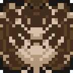
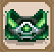
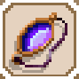
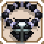
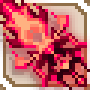
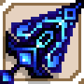

Skul The Hero Slayer
ü߆ Sinopse
Você é Skul, um pequeno esqueleto guerreiro em uma missão para salvar o Rei Demônio e seu exército, capturados por heróis humanos. Em um mundo onde os humanos invadiram o castelo dos monstros, agora cabe a um único esqueleto enfrentá-los.
üéÆ Info
Gênero: Ação / Roguelite / Plataforma
Desenvolvedora: SouthPAW Games
Lançamento: 2021
ü¶¥ Diferenciais do Jogo
Sistema de Cabeças: Skul pode trocar de cabeça para obter novas habilidades e estilos de combate.
Gameplay Dinâmico: Mistura ação frenética com estratégia na escolha das transformações.
Roguelite: Fases geradas aleatoriamente, itens únicos a cada run.
Combates contra Heróis: Chefes humanos com mecânicas desafiadoras.
Pixel Art Estilizada: Visual marcante com animações suaves e combate visceral.
⚔️ Modos e Progressão
Progressão por Runs: Morreu? Volta mais forte. Rejogue com builds diferentes.
Loja e Itens: Compre upgrades, encontre equipamentos únicos e descubra sinergias malucas.
üåç Mundo
De florestas sombrias a fortalezas humanas, o jogo traz ambientes variados e repletos de inimigos perigosos. Cada área conta com trilhas sonoras únicas e um clima sombrio cativante.
Yggdrasil – O Ent Ancião

Uma árvore viva milenar corrompida pelos humanos. Antes protetora da floresta, virou uma máquina de esmagar caveiras.
| Habilidades ativas | ||
| Habilidade | Descrição | CD |
| Tanque de bala de corpo |
14 | |
Esmagador Mortal |
13 | |
Inspirar |
13 | |
Grande Corte |
9 | |
Irmãs Leiana
Guerreiras de elite do exército de Carleon. Unidas pela magia e sangue, usam ataques combinados insanos.
Quimera
Um monstro criado em laboratório com partes de várias bestas. Cospe veneno e é nojenta em todos os sentidos.
Arcebispa Joana II
Uma fanática que acredita que está purificando o mundo com a luz… enquanto torra geral com lasers e invocações.
Primeiro Herói
O “herói lendário” que venceu a guerra contra os demônios… mas virou um monstro obcecado por poder.
Skul Sombrio
Uma versão corrompida de você mesmo, do Espelho Negro. Usa Skulls e combos parecidos com os seus.
Guerreiro
Um brutamontes com espadão. Representa os clássicos heróis de RPG que só pensam em bater e tankar.
Arqueiro
Veloz e irritante, vive pulando e mandando flecha. O tipo que irrita mais que machuca.
Mago
Um monstro criado em laboratório com partes de várias bestas. Cospe veneno e é nojenta em todos os sentidos.
Assassino
Uma fanática que acredita que está purificando o mundo com a luz… enquanto torra geral com lasers e invocações.
Paladino
O “herói lendário” que venceu a guerra contra os demônios… mas virou um monstro obcecado por poder.
Cavaleiro Dragão
Uma versão corrompida de você mesmo, do Espelho Negro. Usa Skulls e combos parecidos com os seus.
Ladrão
Uma árvore viva milenar corrompida pelos humanos. Antes protetora da floresta, virou uma máquina de esmagar caveiras.
Caçadora de Demônios
Guerreiras de elite do exército de Carleon. Unidas pela magia e sangue, usam ataques combinados insanos.
Clérigo
Um monstro criado em laboratório com partes de várias bestas. Cospe veneno e é nojenta em todos os sentidos.
Comum
Anel de Casamento Abandonado
"Quanto tempo se passou desde que você o tirou? É um anel que causa calafrios."
Raridade: Comum
Efeito:
Aumenta velocidade do cooldown de habilidade em 25%.
Ao atacar um inimigo com um ataque básico, tem 2% de chance de inflingir congelamento
Inscrições
Herança /Zero absoluto
Anel de vento
"Popular entre os viajantes, mesmo que não tenham poderes especiais como roubar espíritos."
Raridade: Comum
Efeito:
Aumenta a velocidade de ataque em 15% e a velocidade de movimento em 15%.
Inscrições
Herança /Emergência
Arco Carleon Padrão
"Os arcos não são tão populares como costumavam ser depois do aparecimento das bestas."
Raridade: Comum
Efeito:
Aumenta a Taxa crítica em 8%.
Inscrições
Espólios /Golpeada
Armadura Carleon Padrão
"Armadura padrão indistinta usada pelo Exército Carleon."
Raridade: Comum
Efeito:
Diminui os danos sofridos em 15%.
Inscrições
Fortaleza /Espólios
Bastão de Carleon Básico

"Um bastão normal atribuído aos estudantes da Academia de magia de Carleon"
Raridade: Comum
Efeito:
Aumenta o ataque mágico em 30%.
Inscrições
Sabedoria /Espólios
Bastão de Kendo
"Espada de prática oriental capaz de acertar a cabeça rapidamente"
Raridade: Comum
Efeito:
Aumenta a velocidade de ataque em 20%
Inscrições
Armas /Velocidade
Cruz Antiga
"Não me provoque ainda mais... Sindo..."
Raridade: Comum
Efeito:
Aumenta a Taxa crítica em 5%.
Ao atacar um inimigo com um ataque básico, tem 2% de inflingir atordoamento
Inscrições
Relíquia /Tontura
Engrenagem Manatech
"Engrenagens quentes que continuam girando mesmo depois de todo o trabalho ser feito."
Raridade: Comum
Efeito:
Aumenta o ataque mágico em 20%
Ao atacar um inimigo com um ataque básico, tem 2% de chance de inflingir queimadura.
Inscrições
Manatech /Fogo posto
Espada Carleon Padrão
"Espada Carleon padrão. Sua durabilidade é questionável, mas mesmo assim tem um lâmina afiada se for bem cuidada"
Raridade: Comum
Efeito:
Aumenta o ataque físico em 30%.
Inscrições
Coragem /Espólios
Espiríto da Sombra da Morte
"Um pequeno espiríto das sombras que propôs um aventura ao tolo espiríto Rustamilkon"
Raridade: Comum
Efeito:
Espiríto da Sombra da Morte segue você e inflinge dano mágico aleatoriamente a inimigos próximos com magia da sombra a cada 7 segundos.
Se possuir também o "Espiríto da Luz Lugh" em conjunto, o item será alterado para "Sombra do Espiríto Tenebroso".
Inscrições
Conto de fadas /Briga
Insígnia Carleon
"Tal como em todos os outros locais, o Exército Carleon fornece melhor equipamento a membros de hierarquia mais elevada."
Raridade: Comum
Efeito:
Gera 30 unidades de ouro por item Carleon que você tem ao mudar de mapas.
Inscrições
Espólios /Tesouro
Lasca de Quartzo negro descolorido

"Parece que conheci um homem louco que focou toda a sua fúria em sua vingança."
Raridade: Comum
Efeito:
Aumenta o HP em 25.
Inscrições
Antiguidade /Vingança
Oração de graça
"É claro que eu fiz. O faço todos os dias. Sim, eu coloco o meu coração nisso."
Raridade: Comum
Efeito:
Aumenta a velocidade do cooldown de habilidade em 40%.
Inscrições
Relíquia /Ciclo de mana
Pedra do ódio
"Uma pedra que os xamãs orc impregnaram com magia negra para aprimorar a combatividade."
Raridade: Comum
Efeito:
Aumenta o ataque mágico em 55% por 4 segundos quando atingido.
Inscrições
Artefato /Vingança
Pingente Venenoso

"Mas quem... colocaria veneno aqui..."
Raridade: Comum
Efeito:
Aumenta o ataque físico em 20%.
Ao atacar um inimigo com um ataque básico, tem 2% de chance de envenenar o inimigo
Inscrições
Herança /Envenenamento
Punhal Quebrado
"Não sei porquê, mas após serem quebrados são mais perigosos."
Raridade: Comum
Efeito:
Aumenta a velocidade de ataque em 15%.
Ao atacar um inimigo com um ataque básico, tem 2% de chance de inflingir ferimento.
Inscrições

Lâmina oculta /Sangramento excessivo
Semente Desconhecida
"Uma grande semente radiante com poderes desconhecidos."
Raridade: Comum
Efeito:
Sempre que são recuperados 10HP, o ataque físico e o ataque mágico aumentam em 1%.
Quando os HP recuperados alcançam 300, o item se transforma em uma "Semente da Árvore do Mundo".
Inscrições
Poder ancestral /Ciclo de mana
Raro
Décimo Primeiro Dedo do Relâmpago
"Ninguém sabe se esse Relâmpago é uma pessoa verdadeira, ou se o Dedo é apenas uma figura de expressão."
Raridade: Raro
Efeito:
Um relâmpago atinge um inimigo aleatório a cada 8 segundos, causando danos mágicos.
Inscrições
Artefato /Duelo
Vírus Abissal
"Aviso: Elevada a chance de ativar ao causar danos mortais."
Raridade: Raro
Efeito:
Ao causar danos superiores a 50% do HP máximo de um inimigo, um espinho aparece causando dano mágico aos inimigos próximos. (5% para aventureiros e chefes) (Cooldown: 1 segundo)
Inscrições
Artefato /Execução
Eco de um Ataque
"Ei, o eco era realmente algo que dava para ver assim?"
Raridade: Raro
Efeito:
Ao realizar um ataque básico, um eco ressoa para longe, causando dano mágico.
Inscrições
Sabedoria /Velocidade
Espada de Aceleração
"Posso fazer isso o dia todo."
Raridade: Raro
Efeito:
A cada 14 segundos, golpeia com a espada de aceleração, causando dano físico.
Quanto maior for a velocidade de ataque, mais vezes irá golpear com ela.
Inscrições
Armas /Velocidade
Bracelete dos Ancestrais
"Uma pulseira imbuída de poder dos ancestrais. Meus braços estão formigando"
Raridade: Raro
Efeito:
A velocidade de cooldown da quintessência aumenta em 45%.
A velocidade de ataque aumentada em 30%.
Inscrições
Poder ancestral /Velocidade
Queimador de Incenso de incenso antigo
"Um queimador de incenso usado para comunicar com os espirítos ancestrais dentro das quintessências."
Raridade: Raro
Efeito:
Aumenta a velocidade de cooldown da quintessência em 65%.
Aumenta os HP máximos em 35.
Inscrições
Antiguidade /Poder ancestral
Sapatos de ferro do Frio Cruel
"Pelo menos, esses sapatos não são desenhados para matar baratas."
Raridade: Raro
Efeito:
Enquanto estiver no ar, aumenta o ataque mágico em 40%.
Ao atacar um inimigo com um ataque básico no ar têm 5% de chance de causar congelamento.
Inscrições
Emergência /Zero absoluto
Punhal de Assassino
"Como pode ver, este punhal não é para cortar, é para apunhalar."
Raridade: Raro
Efeito:
Aumenta a Taxa crítica em 15%.
Aumenta a velocidade de ataque em 25% e a velocidade de movimento em 20% das Caveiras de Velocidade
Inscrições
Lâmina oculta /Golpeada
Colar do Aprendiz
"Não há nada demasiado complicado sobre meditação. Basta fechar seus olhos e se concentrar."
Raridade: Raro
Efeito:
Aumenta a velocidade de concentração em 40% e aumenta o ataque mágico em 35%.
Inscrições

Antiguidade /Sabedoria
Escápula do Aprendiz
"Não pertube a sua meditação."
Raridade: Raro
Efeito:
Aumenta a velocidade de concentração em 40% e aumenta o ataque físico em 35%.
Inscrições
Fortaleza /Coragem
Bico de Raptor
"Um bico bem afiado. A quem pertencerá ele?"
Raridade: Raro
Efeito:
Aumenta velocidade de ataque em 25% e a taxa crítica em 5%.
Ao alternar com caveiras do tipo de velocidade, a chance de acerto crítico aumenta em 10% por 12 segundos.
Inscrições
Poder ancestral /Golpeada
Luva de Berserker
"Uma vez vendi isso sem pensar, e uma tribo toda foi massacrada." - Comerciante caminhante
Raridade: Raro
Efeito:
Aumenta a velocidade de ataque em até 70% em proporção aos HP do chefe.
Inscrições
Obra Prima /Vingança
Osso da Loucura
"Osso formado pela compressão de vários ossos. Diz-se que a forma desses ossos é bastante interessante"
Raridade: Raro
Efeito:
Ao usar a habilidade, é criada uma área de ossos que dura 5 segundos. (recarga: 5 segundos)
O ataque físico e ataque mágico aumentam quando estiver dentro dessa área.
Inscrições
Osso /Briga
Osso do tempo
"Uma ampulheta grotesca contendo pó fino de osso"
Raridade: Raro
Efeito:
Diminui o cooldown de alternação em 0,5 segundos sempre que você usa habilidades.
Inscrições
Osso /Ciclo de mana
Escrituras Ardentes
"Venha ler! Se você tudo, deixa a próxima pessoa..."
Raridade: Raro
Efeito:
Aumenta o ataque mágico em 30%.
Inimigos com queimaduras têm 15% de causar queimadura ao causar dano a inimigos próximos
Inscrições
Relíquia /Fogo posto
Motor de mana quebrado
"Algum tipo de componente que se desloca aleatoriamente enquanto vaza combustível."
Raridade: Raro
Efeito:
Ao esquivar, cria uma massa de magia.
A massa de magia explode após um determinado tempo causando dano mágico.
Aumenta a velocidade de cooldown da habilidade em 55%.
Inscrições
Manatech /Perseguir
Véu da sacerdotisa
"Um pano preto é colocado sobre o véu para bloquear as vozes de demônios."
Raridade: Raro
Efeito:
A cada 10 segundos, você ganhará um bônus aleatório que dura 10 segundos.
(o ataque físico e ataque mágico aumentam em 35% / o dano recebido reduz em 10% / a velocidade de ataque aumenta em 25% e a velocidade de movimento aumenta em 35%).
Inscrições
Reliquia /Ciclo de mana
Condecoração de Cavalaria
"Um ornamento de cavalaria digno. Parece que ainda deseja correr"
Raridade: Raro
Efeito:
Ao esquivar, apunhala o inimigo na frente, causando dano físico.
Inscrições
Herança /Perseguir
Capa do covarde
"Eu não estou fugindo, esta é uma retirada estratégica!"
Raridade: Raro
Efeito:
Após esquivar, se pular dentro de um período de 0,1 segundo, a sua velocidade de movimento aumenta em 300% por 1 segundo.
Inscrições
Antiguidade /Perseguir
Coração Podre
"Coração podre que esguicha veneno ao ser atingido."
Raridade: Raro
Efeito:
Aplica veneno a inimigos próximos quando são atingindos.
(Cooldown: 1 segundo)
Quando os inimigos envenenados morrem, as substâncias em decomposição se espalham e envenenam os inimigos próximos.
Inscrições
Vingança /Envenenamento
Determinação do Cavaleiro
"Um leme usado por um cavaleiro sem nome que foi encontrado morto em um palácio destruído com seu escudo ainda mantido para cima."
Raridade: Raro
Efeito:
Diminui os danos sofridos em 30% quando seus HP restantes são 30% ou menos.
Inscrições
Fortaleza /Vingança
Seringa Descartável
"É óbvio que é descartável, mas acabei por usar pelo menos umas 10 vezes."
Raridade: Raro
Efeito:
Aplica veneno ao fazer um ataque crítico.
Inscrições
Infortúnio /Envenenamento
Cinto de Lutador
"O cinto de um lutador conhecido por ter enfrentado 17 sozinho. Os resultados se perderam ao longo do tempo."
Raridade: Raro
Efeito:
Por cada inimigo próximo, aumenta o ataque físico em 15%.
(Máximo de 90%)
Inscrições
Fortaleza /Vingança
Machado da execução
"Um machado que corta a cabeça de um inimigo em um único golpe."
Raridade: Raro
Efeito:
Aumenta o ataque físico em 50%.
Aumenta os HP máximos das Caveiras de Poder em 30.
Inscrições
Armas /Execução
Fragmento da Carruagem do Sol
"Fragmentos de uma carruagem que se quebrou enquanto vagava pelo céu."
Raridade: Raro
Efeito:
Ao esquivar, causa chamas, causando dano mágico e 10% de chance de causar queimaduras.
Inscrições
Perseguir /Fogo posto
Espada Distorcida
"Espada curvada mortal com trajetória desconhecida."
Raridade: Raro
Efeito:
Aumenta o ataque físico em 25%.
Aumenta a taxa crítica em 10%.
Inscrições
Lâmina oculta /Duelo
Pedra Brilhante
"Uma pedra de grande brilho. Não se iguala ao brilho da luz."
Raridade: Raro
Efeito:
Ao usar a habilidade 5 vezes, você ganha uma barreira de 10HP que dura 30 segundos. (Cooldown: 30 segundos)
Inscrições
Tesouro /Ciclo de mana
Machado do Gigante
"Quem quer que você seja, não implique com os mamutes dele"
Raridade: Raro
Efeito:
Aumenta o ataque físico em 40%.
Alternando para Caveiras de Poder lança os inimigos no ar e causa dano físico.
Inscrições
Armas /Mutante
Gnomo do Espírito da terra
"O gnomo que, em tempos, suportou a grande parede dos anões subterranêa está para sempre encurralado no colar de Rustamilkon"
Raridade: Raro
Efeito:
O espiríto da terra segue você e causa dano mágico a inimigos próximos com magia de pedra a cada 12 segundos.
Inscrições
Conto de fadas /Fortaleza
Queimador de Incenso de ouro
"Vender isso é como matar um ganso dourado."
Raridade: Raro
Efeito:
Aumenta o ganho de ouro em 25%.
Aumenta os HP máximos em 35.
Inscrições
Antiguidade /Tesouro
Espada Dourada
"Use o ouro que sobrar para criar a melhor espada do mundo."
Raridade: Raro
Efeito:
Para cada 100 moedas de ouro consumidas, aumenta o ataque físico em 1% (Máximo de 70%).
Inscrições
Armas /Tesouro
Varinha Dourada
"Use o ouro em excesso para fazer a varinha mais maravilhosa do mundo."
Raridade: Raro
Efeito:
Para cada 100 moedas de ouro consumidas, aumenta o ataque mágico em 1% (Máximo de 70%).
Inscrições
Artefato /Tesouro
Chicote de Ouro
"Venha me bater! Por favor! Por favor! Por favor!"
Raridade: Raro
Efeito:
Aumenta o ganho de ouro em 15%.
Aumenta em 25% a taxa crítica por 4 segundos quando atingido.
Inscrições
Tesouro /Vingança
Máquina de Exame de Saúde
"Existem testes rápidos e precisos para a detecção precoce de doenças."
Raridade: Raro
Efeito:
Por cada inimigo próximo afetado por um efeito de status, aumenta a velocidade cooldown de alternação em 10% e taxa crítica em 4%. (Até 50% e 20% respectivamente)
Inscrições
Manatech /Golpeada
Luvas de Guerreiro
"Armadura que desvia tanto espadas como magia."
Raridade: Raro
Efeito:
Ao esquivar cria uma explosão de energia que causa dano físico.(Cooldown: 7 segundos)
Inscrições
Obra Prima /Coragem
Coração de Naias
"Uma gema mágica encontrada no lugar do coração do espiríto que protegia o Lago Elemental."
Raridade: Raro
Efeito:
Congela os inimigos próximos ao ser atingido. (Cooldown: 10 segundos)
Quando o efeito de congelamento acaba, ocorre uma tempestade de gelo que causa dano mágico
Inscrições
Poder ancestral /Zero absoluto
Punhal Oculto
"Quanto mais fino for seu puslo, mais fácil será ocultar esses punhais em suas mangas."
Raridade: Raro
Efeito:
Ao esquivar, atira um punhal que causa dano físico.
Aumenta a taxa crítica em 10%.
Inscrições
Lâmina oculta /Perseguir
Dispositivo de Propulsão Manatech
"Iniciando a contagem regressiva... Três, dois, um... reforço ativado!"
Raridade: Raro
Efeito:
Ao usar um ataque básico ou habilidade no ar, a velocidade de ataque aumenta em 10% por 10 segundos. (Máximo de 50%)
Inscrições
Manatech /Emergência
Botas do Caçador
"A magia do vento é adicionada a estas botas feitas de pele de cervo da Floresta da Harmonia."
Raridade: Raro
Efeito:
Ao esquivar, uma flecha cai em um inimigo aleatório e causadano físico.
Inscrições
Obra Prima /Perseguir
Espadeiras da balança de gelo
"Não consigo sentir meus ombros"
Raridade: Raro
Efeito:
Aumenta em 30% o dano causado por ataques de esquiva aos inimigos.
Ao atacar os inimigos com ataques de esquiva, tem 10% de chance de causar congelamento.
Inscrições
Fortaleza /Zero absoluto
Chama Interior
"O impulso ardente enterrado nas naturezas do subconsciente."
Raridade: Raro
Efeito:
Ao alterar, causa chamas que infligem dano mágico a inimigos próximos e aplica também efeito de queimadura. Aumenta em 60% o ataque mágico por 12 segundos.
Inscrições
Mutante /Fogo posto
Maldade Interior
"O coração rancoroso oculto nas profundezas do subconsciente."
Raridade: Raro
Efeito:
Ao alterar, faz com que veneno interno cause dano físico a inimigos próximos, inflige veneno e aumenta em 60% o ataque físico por 12 segundos.
Inscrições
Mutante /Envenenamento
Espada Invisível
"Uma espada sem lâmina. Diz-se que quando alguém é por ele, a sua fica ferida."
Raridade: Raro
Efeito:
Aumenta a taxa crítica em 10%.
Após um gople crítico, ataca com a espada invisível, causando dano mágico adicional.
Inscrições
Lâmina oculta /Infortúnio
Espinho Jagamon
"O espinho quebrado de Jagamon pode ser transformado em uma arma letal quando enrola em bola."
Raridade: Raro
Efeito:
Ao atacar um inimigo ferido com um ataque básico, inflinge dano fixo adicional de 7, aumentando também a velocidade de ataque e de movimento em 3% por 5 segundos. (Máximo de 30%)
Inscrições
Poder ancestral /Sangramento excessivo
Justiça Aplicada
"As crianças hoje em dia são tão mimadas."
Raridade: Raro
Efeito:
Aumenta o ataque físico e o ataque mágico em 30%.
A cada 12 segundos, seu próximo ataque causa atordoamento.
Inscrições
Execução /Tontura
Foice de corrente da Jenny
"Prazer em conhece-lô, irmão. Mas já chega de conversa."
Raridade: Raro
Efeito:
Ao realizar um ataque básico no ar, balance a foice para inflingir dano físico.
Inscrições
Emergência /Infortúnio
Colar do Mago
"Cravejado com pedras preciosas para ajudar o portador a sentir o fluxo da mana."
Raridade: Raro
Efeito:
Ao usar uma habilidade, cria uma esfera flamejante
A esfera lança uma bola de fogo ao inimigo mais próximo causando dano mágico.
Inscrições
Heranca /Ciclo de mana
Xícara de chá de luxo
"Mesmo em combate, relaxar um pouco não é uma coisa ruim, não é?"
Raridade: Raro
Efeito:
QUando uma concentração começa, enjirece inimigos próximos. Ao terminar, aumenta a taxa crítica em 15% por 3 segundos. (Cooldown: 3 segundos)
Inscrições
Antiguidade /Herança
Gargantilha Mágica
"Uma gargantilha mágica que é ativada ao sentir o perigo ao seu redor."
Raridade: Raro
Efeito:
Ao alternar, 8 projéteis mágicos são disparados, causando dano mágico.
Aumenta a taxa crítica em 2% por 10 segundos a cada 1 acerto de projétil mágico. (Máximo de 16%)
Inscrições
Mutante /Golpeada
Miçanga mágica da escuridão
"Eu falei, você deveria se manter afastado quando me transformo."
Raridade: Raro
Efeito:
Ao alternar pela terceira vez, causa dano mágico aos inimigos próximos e nocauteia-os.
Inscrições
Mutante /Tontura
Controlador de gravidade Manatech
"Você pensa que pode dizer que tem tanto controle assim?"
Raridade: Raro
Efeito:
Ao usar habilidade, o Controlador de Gravidade Manatech é ativado, causando dano físico a inimigos próximos e flutuando eles temporariamente no ar.
Inscrições
Manatech /Coragem
Aparelho Místico
"Um dispositivo que lhe permite obter um poder misterioso. se você estiver ingerindo algum tipo de medicamento, faça uma consulta com antecedência."
Raridade: Raro
Efeito:
Ao usar habilidade a velocidade de ataque aumenta em 20% por 3 segundos. É gerada também uma misteriosa onda de poder com os ataques básicos que causa dano físico.
Inscrições
Herança /Velocidade
Caixa do Príncipe
"Isto é uma caixa; ela contém oque você deseja"
Raridade: Raro
Efeito:
Aumenta o ataque físico e o ataque mágico em 30%.
Aumenta os HP máximos em 20.
Este item ganha inscrições aleatórias.
Inscrições
Aleatório /Aleatório
Roda ofensiva

"Como foi criado para que nunca pare de se mover para a frente?"
Raridade: Raro
Efeito:
Aumenta o ataque físico em 45%.
Ao alternar depois de usar habilidades 4 vezes, convoca uma roda causa dano físico.
Inscrições
Antiguidade /Ciclo de mana
Ancinho da fúria
"Por que razão alguém gostaria de usar isso para matar gado?"
Raridade: Raro
Efeito:
Após dar o primeiro golpe a um inimigo, a velocidade de ataque aumenta em 25% por 5 segundos.
Após derrotar um inimigo, a velocidade de ataque aumenta em 25% por 5 segundos.
Inscrições
Lâmina oculta /Execução
Pedra do ressentimento
"Esta Pedra do ressentimento absorve energia emocional negativa. Quando está cheia, ressoa mana."
Raridade: Raro
Efeito:
Ao derrotar inimigo, existe uma chance de 30% de criar uma explosão que causa dano mágico.
Aumenta os HP máximos em 30.
Inscrições
Artefato /Execução
Máquina de empatia
"O que, todos vocês ao redor, acham? sentiram isso? Qual é o seu estado?"
Raridade: Raro
Efeito:
Aumenta a velocidade de cooldown de habilidade em 40%.
Quando um inimigo é atordoado, é gerada uma onda que também atordoa os inimigos próximos.
Inscrições
Manatech /Tontura
Punhal Cerimonial
"Um punhal usado por exorcistas Carleon."
Raridade: Raro
Efeito:
Os ataques críticos aumentam o ataque mágico em 55% por 4 segundos.
Aumenta a taxa crítica em 10%.
Inscrições
Lâmina oculta /Artefato
Anel Lunar
"Um anel com padrão de lua que se parece com alguém esperando alguém especial."
Raridade: Raro
Efeito:
Aumenta o ataque mágico em 40%.
Inscrições
Artefato /Sol e Lua
Espada Solar

"Uma espada com padrão de sol que se parece com alguém com saudades de algúem especial."
Raridade: Raro
Efeito:
Aumenta o ataque físico em 40%.
Inscrições
Armas /Sol e Lua
Bastão do ritual
"Também serve como um cacete em um aperto."
Raridade: Raro
Efeito:
Aumenta o ataque mágico em 50%.
Aumenta a velocidade de cooldown de habilidade das Caveiras de Equilíbrio
Inscrições
Artefato /Sabedoria
Esfera do Atirador
"A esfera mágica que se diz só ter uma desvantagem. É impossível atirar com precisão no inimigo desejado."
Raridade: Raro
Efeito:
O ataque mágico aumenta em 25% e o dano crítico aumenta em 10%.
Ao alternar com caveiras do tipo Equilíbrio, várias flechas mágicas são disparadas, causandodano mágico.
Inscrições
Duelo /Infortúnio
Olho de esfinge
"Um olho que se acredita tornar seu portador temível."
Raridade: Raro
Efeito:
Diminui os danos das armadilhas em 75%.
Aumenta o Ataque mágico em 35%.
Inscrições
Poder ancestral /Artefato
Sílfide do Espírito do Vento
"O Sílfide que, em tempos, tomou conta do Desfiladeiro Druída está para sempre encurralado no colar de Rustamilkon."
Raridade: Raro
Efeito:
O espírito do vento Sílfide segue você e causa dano mágico a inimigos próximos com magia de vento a cada 10 segundos.
Inscrições
Conto de fadas /Velocidade
Benção do Elementalista
"O último legado do falecido Rustamilkon."
Raridade: Raro
Efeito:
Aumenta o ataque mágico em 45% por cada Espírito que você tem.
Inscrições
Conto de fadas /Herança
Armadura do Ladrão
"Armadura aerodinâmica popular entre assassinos"
Raridade: Raro
Efeito:
Ao atacar com ataques básicos, atira uma estrela ninja que causa dano físico.
Em um ataque crítico, atira uma estrela ninja gigante que causa dano físico. (Cooldown: 0,5 segundos)
Inscrições
Lâmina oculta /Infortúnio
Símbolo da Força
"A armadura de um guerreiro que acreditava que a defesa era o melhor ataque."
Raridade: Raro
Efeito:
Ao ser atacado enquanto possui uma barreira de HP ativa, uma onda de choque é gerada em direção ao alvo que você atacou.
O dano da onda de choque é proporcional ao HP da barreira e é determinado pelo maior valor entre seu ataque físico ou mágico.
Inscrições
Fortaleza /Herança
Brafoneiras espinhosas
"Tais peças extraordinárias de armadura normalmente são populares entre os mercenários."
Raridade: Raro
Efeito:
Aumenta em 80% o dano causado por ataques de esquiva aos inimigos.
Tem 10% de chance de ferir os inimigos com ataques de esquiva.
Inscrições
Fortaleza /SangramentoExcessivo
Botas espinhosas
"Botas cravejadas com espinhos afiados na sola."
Raridade: Raro
Efeito:
Enquanto estiver no ar, aumenta o ataque físico em 40%.
Ao atacar um inimigo com um ataque básico no ar, têm 15% de chance de causar ferimento.
Inscrições
Emergência /Sangramento excessivo
Bainha Transmitida
"Uma bainha de espada que se diz sobreviver mesmo depois de ter perdido sua espada devido à sua longa vitalidade. Há um boato em que se diz que a espada foi deitada fora."
Raridade: Raro
Efeito:
Ao restaurar HP, causa um corte ao seu redor por 10 segundos, causando dano físico.
Inscrições
Relíquia /Ciclo de mana
Tempo do Sábio
"O que é a vida? De repente transforma uma pergunta no propósito de tudo."
Raridade: Raro
Efeito:
Por cada habilidade em cooldown, aumenta o ataque físico em 25%.
Inscrições
Obra Prima /Coragem
Presa de Vampiro
"A presa de Elizabeth pode ser destruída por qualquer coisa sob o sol."
Raridade: Raro
Efeito:
Ao derrotar 5 inimigos, restaura 1 de HP e uma estaca de vampiro aparece, causando ferimentos em inimigos próximos.
Inscrições
Poder ancestral /Sangramento excessivo
Espada Rápida Inconsciente
"Não consigo mais me controlar. Me rendo à espada rápida."
Raridade: Raro
Efeito:
Causa dano físico aleatoriamente a inimigos próximos a cada 13 segundos.
Inscrições
Armas /Duelo
Brafoneiras do Guerreiro
"Alguém tem que ter ombros incrivelmente largos para usar esta armadura."
Raridade: Raro
Efeito:
A cada 20 segundos, cria uma parede que dura por 5 segundos.
A parede anula os danos recebidos da frente.
Inscrições
Fortaleza /Briga
Armadura de vento
"Armadura de metal impregnada com o poder do vento do Desfiladeiro Druída."
Raridade: Raro
Efeito:
Após esquivar, num período de 0,4 segundos, um vento cortante irá cercá-lo por 2 segundos causando dano mágico aos inimigos próximos.
Inscrições
Fortaleza /Perseguir
Bastão Mágico
"Eu não sou um slime maligno!"
Raridade: Raro
Efeito:
10% de chance de transformar num animal fofo ao atacar inimigos com seu HP no máximo (exceto aventureiros e chefes).
Inscrições
Mutante /Ciclo de mana
Gratidão do Ent Ancião
"Bençãos de Yggdrasil que contêm energias da Floresta da Harmonia."
Raridade: Raro
Efeito:
Concede uma barreria de 50 HP.
Durante o efeito do escudo, o ataque físico e o ataque mágico aumentam em 50%.
Quando o escudo quebra, a gratidão do Ent Ancião é destruída.
Inscrições
Fortaleza /Briga
Elmo dos Anciões
"Um antigo elmo que irradia a alma de um guerreiro."
Raridade: Raro
(DLC)
Efeito:
Ao usar um quintessência, o ataque físico aumenta em 60% por 10 segundos.
Inscrições
Poder ancestral /Mistério
Cinto de Força
"Cinto que concede ao usuário uma força imensa."
(DLC)
Raridade: Raro
Efeito:
Uma carga elétrica explode do inimigo atingido pelo terceiro ataque básico, causando dano mágico aos inimigos.
Inscrições
Briga /Mistério
Lago em um garrafa
"Pequena garrafa que guarda o segredo da Floresta da Magia."
(DLC)
Raridade: Raro
Efeito:
Aumenta o ataque mágico.
Se você tiver a Undine do espiríto da água, ela vai retornar à sua forma original.
Inscrições
Conto de fadas /Mistério
Mão do Destruidor
"Arma poderosíssima projetada pela mão de uma criatura muito forte."
(DLC)
Raridade: Raro
Efeito:
Aumenta o ataque físico em 50%.
Atordoa inimigos próximos ao usar 3 habilidades
Inscrições
Tontura /Mistério
Gerador de Lealdade
"Reinvindique apenas oque é seu."
(DLC)
Raridade: Raro
Efeito:
A velocidade de ataque aumenta em 40% por 3 segundos após causar dano a um inimigo com uma habilidade.
Aumenta o ataque físico em 40% por 3 segundos após causar dano a um inimigo com um ataque básico.
Inscrições
Manatech /Mistério
Lança de Infantaria
"Então, vamos lutar na sombra?"
(DLC)
Raridade: Raro
Efeito:
Golpeia um inimigo com um lança para causar dano físico.
Inscrições
Armas /Mistério
Botas Mágicas
"Par de botas aprimorados por um mago lendário."
(DLC)
Raridade: Raro
Efeito:
A velocidade de ataque aumenta em 40% por 3 segundos após esquivar.
Inscrições
Velocidade /Mistério
Crina de Cavalo Vermelho
"A crina carmesim de um cavalo vermelho."
(DLC)
Raridade: Raro
Efeito:
Aumenta a velocidade de ataque e a velocidade de movimento em 25%.
A velocidade de ataque aumenta em 40% por 8 segundos ao alternar.
Inscrições
Mutante /Mistério
Estátua do Colosso
"Estátua em homenagem a um amigo próximo que foi assassino por um agressor desconhecido."
(DLC)
Raridade: Raro
Efeito:
Aumenta o HP máximo em 35.
O ataque básico a um inimigo vai atrair inimigos próximos.
Inscrições
Antiguidade /Mistério
Trombeta Uivante
"Trombeta que sinalizou o fim do mundo."
(DLC)
Raridade: Raro
Efeito:
Cria um pulso que causa dano mágico e aumenta o ataque mágico em 45% por 4 segundos ao usar uma habilidade após 5 ataques básicos.
Inscrições
Ciclo de mana /Mistério
Único
Arco do Mestre Arqueiro Covarde
"Eu não estou assustado, apenas muito cauteloso." -Atirador certeiro covarde de Ironsnail
Raridade: Único
Efeito:
Amplifica os danos de projéteis em 40% se não houver inimigos ao seu redor.
Inscrições
Infortunio /Golpeada
Arco longo de madeira do Caçador
"As bestas mais pequenas não podem competir com o poder destrutivo deste arco longo gigante."
Raridade: Único
Efeito:
Aumenta os danos críticos em 35%.
Inscrições
Infortunio /Golpeada
Armadura Alada
"Armadura de quem cortava os céus e liderava na vitória. Sabe-se qye era invencível no ar."
Raridade: Único
Efeito:
Enquanto estiver no ar, o dano recebido é reduzido em 35% e a velocidade de cooldown de habilidade é aumentada em 50%.
Inscrições
Fortaleza /Emergência
Armadura do Arquiteto
"Ah, então você tem planos!"
Raridade: Único
Efeito:
Ao usar uma habilidade, recebe uma barreia de 10HP por 1 segundo, e ao ser atacado, aumenta o ataque físico em 60% por 2 segundos.
Inscrições
Fortaleza /Coragem
Bastão da Bruxa Gelada
"Aquela bruxa doida, costumava trazer uma avalanche várias vezes ao dia."
Raridade: Único
Efeito:
O congelamento de um inimigo ativa a magia da Bruxa Gélida para causar dano mágico aos inimigos ao redor e causar-lhes congelamento.
Ao causar dano ao inimigo com a magia da Bruxa Gélida, o ataque mágico aumenta em 8% por 12 segundos (acumula até 80%).
Inscrições
Artefato /Zero absoluto
Bastão da Vitória
"Vou-me assegurar de acabar com você quando for minha vez!"
Raridade: Único
Efeito:
Ao alternar, por 4 segundos, o ataque mágico aumenta em 85% e a velocidade de movimento aumenta em 50%.
Durante o efeito, a sua duração será reiniciada ao derrotar um inimigo.
Inscrições
Execução /Mutante
Bastão de aço do Guerreiro
"Se acredita que esse bastão gigante é a arma mais pesada em Carleon."
Raridade: Único
Efeito:
Ao atordoar o inimigo, causa dano físico adicional e aumenta o ataque físico em 40% por 10 segundos.
Inscrições
Armas /Tontura
Bastão do Sacerdote
"Leonia Omnipotente, me proteja com sua luz eterna."
Raridade: Único
Efeito:
Restaura lentamente os HP quando os HP atuais estão a 30% ou menos.
Inscrições
Relíquia /Antiguidade
Bastão Manatech
"Cristal de Manatech com forte poder destrutivo.
No entanto, o seu uso é o mesmo que outros bastões."
Raridade: Único
Efeito:
Ao atacar um inimigo com um ataque básico, após usar habilidade 3 vezes, o ataque será crítico por 3 segundos.
Inscrições
Manatech /Golpeada
Baú de Chamas
"Um baú contendo um feitiço de fogo. É tão quente que não pode ser aberto."
Raridade: Único
Efeito:
Ao atacar um inimigo com queimadura, as chamas sobem, causando dano mágico nos inimigos próximos. (Cooldown: 1 segundo)
Inscrições
Artefato /Fogo posto
Caixa de medelhas
"Aventureiros... Por que eles continuam coletando isso? Mais vale fazer o mesmo."
Raridade: Único
Efeito:
Quando um aventureiro é derrotado, aumenta o ataque físico em 20%. (Máximo de 140%)
Inscrições
Tesouro /Coragem
Cajado Manatech

"Um cajado com o poder de reunir toda a magia ao seu redor."
Raridade: Único
Efeito:
Ao usar habilidade, aumenta o ataque mágico em 10% por 8 segundos. (Máximo de 60%)
Quando o efeito do item atinge o seu máximo, a chance de taxa crítica aumenta em 20%.
Inscrições
Manatech /Infortúnio
Circulador Manatech
"Um produto miraculoso que dura infinitamente a partir de 1."
Raridade: Único
Efeito:
Ao usar uma habilidade, o cooldown de cooldown da outra habilidade reduz em 2 segundos.
Inscrições
Manatech /Ciclo de mana
Estátua de Madeira
"Não há como saber porque se está fazendo tanto alardo sobre a Estátua de madeira que é tão adorados."
Raridade: Único
Efeito:
Aumenta velocidade do cooldown de habilidade em 100%.
Quando atingido, este item perderá o efeito. (Cooldown: 10 segundos)
Inscrições
Herança /Obra Prima
Jamadhar Carbonizado
"Não é díficil de utilizar. Corte e pegue fogo."
Raridade: Único
Efeito:
Ao atacar um inimigo com um ataque básico, tem 15% de chance de inflingir queimadura.
Causa dano mágico adicional ao causar queimaduras em inimigos queimados.
Inscrições
Lâmina oculta /Fogo posto
Máscara de Pedra
"Eu deixar de ser humano! E vou os transcender!"
Raridade: Único
Efeito:
A quantidade de ouro obtido aumenta de acordo com o nível da caveira mais alta entre as caveiras que possui (20%/30%/40%/50%).
Inscrições
Tesouro /Antiguidade
Manoplas de Mana
"Uma ferramenta mágica, projetada para extrair manualmente a mana do corpo."
Raridade: Único
Efeito:
Ao atacar um inimigo com um ataque básico, aumenta o ataque mágico em 5% por 5 segundos. (Máximo de 75%)
Quando o efeito do item atinge o seu máximo, os ataques básicos ao inimigo irão causar adicionalmente dano mágico.
Inscrições
Artefato /Velocidade
Fragmento de Lâmina Horrífica
"Um fragmento aterrorizante que inflinge uma ferida que jamais cicatriza."
Raridade: Único
Efeito:
Ao ocorrer sangramento com um ataque básico, ataca com um fragmento de lâmina horrífica por 4 segundos, e causa dano físico.
Inscrições
Obra Prima /Sangramento excessivo
Fragmento de Lâmina Horrífica
"Um fragmento aterrorizante que inflinge uma ferida que jamais cicatriza."
Raridade: Único
Efeito:
Ao ocorrer sangramento com um ataque básico, ataca com um fragmento de lâmina horrífica por 4 segundos, e causa dano físico.
Inscrições
Obra Prima /Sangramento excessivo
Carimbo Clone
"Por que continua carimbando duas vezes? Por que continua carimbando duas vezes?"
Raridade: Único
Efeito:
Aumenta o ataque físico e o ataque mágico em 40%.
Aumenta os HP máximos em 30.
Este item ganha duas inscrições aleatórias do mesmo tipo.
Inscrições
Aleatório /Aleatório
Explosão Traseira
"Uma ferramenta mágica que usa todas as gramas de mana do seu usuário para conseguir o efeito máximo."
Raridade: Único
Efeito:
Os ataques de quintessência bem sucedidos aumentam o ataque físico en 90% por 5 segundos.
Inscrições
Manatech /Execução
Osso da Coragem

"Julgando pelo seu peso, duvido que este osso flutue na água."
Raridade: Único
Efeito:
A cada 5 segundos, ao atacar fisicamente um inimigo, o dano físico causado é amplificado em 20% por 1 segundos.
Com base no número de Caveiras de Poder possuidas, amplificação dos danos pode ser aumentada para 40%/80%.
Inscrições
Osso /Coragem
Osso da Rapidez
"Na realidade isso não me dá asas, mas mesmo assim me faz sentir como se pudesse voar."
Raridade: Único
Efeito:
Ao atacar um inimigo com um ataque básico, causa dano adicional de acordo com o maior valor entre ataque físico e ataque mágico.
O dano adicional é amplificado em 25% ou 75%, dependendo da quantidade de Caveiras de Velocidade que possui.
Inscrições
Osso /Velocidade
Osso de Mana
"Quão rico você tem quer ser para usar coisas como essa?"
Raridade: Único
Efeito:
Ao usar uma habilidade, cria uma tempestade de mana ao seu redor e causa dano mágico.
Com base nas caveiras do tipo equilíbrio possuídas, os danos aumentam em (20%/60%).
Inscrições
Osso /Ciclo de mana
Devorador de Mana
"Um Jamadhar feito de metal que armazena mana."
Raridade: Único
Efeito:
Ao atacar um inimigo com um ataque básico após usar uma habilidade, é atacado por um devorador de mana e inflinge dano físico ao inimigo na frente.
Inscrições
Lâmina oculta /Ciclo de mana
Mestre Arruaceiro
"Um elmo usado por um guerreiro que era forte o suficiente para lutar contra cem homens."
Raridade: Único
Efeito:
Aumenta o ataque físico e o ataque mágico em 25%.
Com 4 ou mais inimigos ao seu redor, será aumentado em mais 55%.
Inscrições
Briga /Execução
Espada sagrada do Herói

"Isso explica por que razão ele ataca sempre que me vê!"
Raridade: Único
Efeito:
A corrida aumenta o ataque físico em 100% por 2 segundos.
Inscrições
Armas /Perseguir
Livro Proibido
"Livro desconhecido que absorve feitiços."
Raridade: Único
Efeito:
Aumenta em 15% o ataque mágico.
Obtenha 1 página do grimório ao causar dano ao inimigo com a habilidade (máximo de 3 páginas do mesmo alvo).
Ao obter 500 páginas do livro, o item muda para "Demonômicon".
Inscrições
Artefato /Ciclo de mana
Espada Proibida
"Uma espada sendo contida por uma força poderosa. Um leve tremor pode ser sentido."
Raridade: Único
Efeito:
Aumenta o ataque físico em 15%.
Quando são mortos 300 inimigos, este item se transforma na Espada do Mal: Kirion.
Inscrições
Armas /Velocidade
Pedra do Herdeiro
"Uma pedra lendária que absorve a mana dos inimigos poderosos e o tranfere para o seu mestre."
Raridade: Único
Efeito:
Quando um chefe é derrotado, aumenta o ataque mágico em 30%.(Máximo de 150%)
Inscrições
Herança /Sabedoria
Pegadas da Luz Sagrada
"Eu procurei seu rastro e cheguei até aqui!"
Raridade: Único
Efeito:
Ao esquivar, aumenta a velocidade de cooldown de habilidade em 10% por 4 segundos. (Máximo de 50%)
Quando o efeito do item atinge o seu máximo, o ataque mágico aumenta em 70%.
Inscrições
Relíquia /Perseguir
Perna Estigma
"Perna artificial que foi cortada enquanto estigmatizava imprudentemente os outros. Não conseguiu deixar os seus maus hábitos e esteve ocupado até pouco antes de morrer"
Raridade: Único
Efeito:
Ao esquivar, o primeiro inimigo atingido será marcado.
Ao correr ou usar uma habilidade, causa dano mágico adicional ao inimigo marcado.
Caso haja um inimigo marcado, não poderá marcar outros inimigos.
Inscrições
Duelo /Perseguir
Espada Mortal
"Como você ainda não está morto!? Vou me certificar de que morra de imediato."
Raridade: Único
Efeito:
É criada uma esfera de veneno ao envenenar um inimigo.
Após 3 segundos, a esfera de veneno faz sair um espinho que causa dano físico, e tem 30% de chance de aplicar veneno.
Inscrições
Armas /Envenenamento
Mestre Lutador
"Um elmo usado pelo campeão do Torneio de luta de Carleon."
Raridade: Único
Efeito:
Aumenta o ataque físico e o ataque mágico em 25%.
Com 2 ou menos inimigos ao seu redor, será aumentado em mais 55%
Inscrições
Duelo /Execução
Diadema de Diorito
"Um diadema mágico poderoso imbuído com a força dos que caíram."
Raridade: Único
Efeito:
Os ataques de quintessência bem sucedidos aumentam o ataque mágico em 90% por 8 segundos.
Inscrições
Herança /Poder ancestral
Elixir da Bruxa
"Um elixir que aumenta consideravelmente o talento do usuário."
Raridade: Único
Efeito:
Ao alternar, o ataque físico aumenta em 85% e a velocidade de movimento aumenta em 120%.
Este efeito dura 5 segundos.
Inscrições
Poder ancestral /Mutante
Couro do Gigante Congelado
"O couro de um gigante que viveu em uma área gélida. Só quando esta frio é que consegue se sentir seguro."
Raridade: Único
Efeito:
Ao usar uma habilidade, recebe a proteção do Gigante Congelado por 5 segundos. (Cooldown: 30 segundos)
O dano recebido é reduzido em 30% enquanto for protegido, e ao congelar um inimigo, ganha uma barreia de HP de 10 que dura 20 segundos. (Máximo de 20)
Inscrições
Poder ancestral /Zero absoluto
Pedra da Peste
"Uma estátua de pedra de um deus da peste feita por um crente no passado. Parece que o deus não gostou da sua aparência."
Raridade: Único
Efeito:
Ao envenenar um inimigo, o ataque físico aumenta em 20% por 10 segundos. (Máximo de 100%)
Inscrições
Obra Prima /Envenenamento
Espada Sedenta por sangue
"Desejo... Sangue..."
Raridade: Único
Efeito:
Ao ocorrer sangramento, o ataque físico aumenta em 1%. (Máximo de 50%)
Quando o efeito deste item atinge o máximo, a taxa crítica aumenta em 20%.
Inscrições
Armas /Sangramento excessivo
Coração de Asceta
"Deixe-se guiar pela dor! Seja favorecido pela luz!"
Raridade: Único
Efeito:
O HP máximo é aumentado em 150.
O HP irá diminuir continuamente quando o HP atual for de 50% ou superior.
Inscrições
Relíquia /Vingança
Manto de Sacerdote Negro
"Um manto imbuído com magia de 30 pessoas que resistiram À luz."
Raridade: Único
Efeito:
Obtenha uma barreira de 30 de HP a cada 30 segundos quando o HP atual do jogador for 30 ou menos.
A taxa crítica aumenta em 30% enquanto durar a barreira.
Inscrições
Relíquia /Vingança
Rosário
"Jamais olhe para baixo, seguro-o enquanto desce."
Raridade: Único
Efeito:
Enquanto estiver no ar, aumenta o ataque físico e o ataque mágico em 70%.
Inscrições
Relíquia /Emergência
Vontade Crescente
"Força redefinida criada por uma vontade forte."
Raridade: Único
Efeito:
Quando a concentração começa, recebe uma barreia de 10 HP e aumenta a taxa crítica em 50% por 2 segundos. (Cooldown: 1 segundo)
Inscrições
Antiguidade /Golpeada
Undine do Espiríto da Água
"A undine que, em tempo, guardou o Lago Elemental, está para sempre preso no anel de Rustamilkon."
Raridade: Único
Efeito:
Undine, o espiríto da água, segue você e batiza inimigos aleatórios ao seu redor a cada 25 segundos, causando dano mágico e congelamento.
Inscrições
Conto de fadas /Zero absoluto
Touro Cretan
"Uma imitação de um Touro Cretan conhecido pela usa ferocidade. Só de olhar me sinto mais forte."
Raridade: Único
Efeito:
Ao esquivar, após usar uma habilidade de Caveira de Poder, uma imagem de touro é formada, causando dano físico e aumentando a distância de corrida.
Inscrições
Tesouro /Perseguir
Salamandra do Espiríto do Fogo
"A Salamandra que, em tempo, gerenciou o Vulcão da pedra negra, está para sempre preso no anel de Rustamilkon."
Raridade: Único
Efeito:
O espiríto de fogo Salamandra segue você causando dano mágico e queimadura a cada 20 segundos.
Inscrições
Conto de fadas /Fogo posto
Punhal de aço preto do ladrão
"Feito de aço preto que absorve a luz, este punhal é díficil de ver no escuro."
Raridade: Único
Efeito:
Cada ataque aumenta a taxa crítica em 2% por 2 segundos.
Este efeito pode ser acumulado até 20 vezes.
Inscrições
Lâmina oculta /Velocidade
Proteção de Mithril
"Proteção feita dos metais mais fortes que fica mais forte quanto mais vezes for atingida."
Raridade: Único
Efeito:
Ao atacar um inimigo com um ataque de corrida, aumenta o ataque físico em 8% por 6 segundos. (Máximo de 80%)
Quando o efeito do item atinge seu máximo, o dano recebido é reduzido em 20%.
Inscrições
Obra Prima /Perseguir
Réplica
"Não ache pouco de mim. Até grande terremotos consigo aguentar"
Raridade: Único
Efeito:
O atordoamento de um inimigo cria tremores secundários que causam dano mágico aos inimigos ao redor e aumentam em 60% a velocidade de cooldown de habilidade por 5 segundos (Cooldown: 1 segundo).
Inscrições
Briga /Tontura
Espada de Pólvora
"No momento da compra, eles me disseram que iria explodir quando eu o balançar!" - Kaliban aventureiro
Raridade: Único
Efeito:
Após um golpe crítico, causa uma explosão que causa dano físico.
Inscrições
Armas /Briga
Flecha Explosiva
"Não aponte este objeto a pessoas ou animais. Mantenha fora do alcance de crianças."
Raridade: Único
Efeito:
Quando o projétil atinge um inimigo, explode e causa dano físico. (Cooldown: 0.3 segundos)
Inscrições
Infortúnio /Briga
Mão da Glória
"Diz-se que o dono dessa mão enorme ficou mais forte à medida que ganhava peso."
Raridade: Único
Efeito:
Aumenta o ataque físico em 4% a cada 10 de HP máximos. (máximo de 120%)
Inscrições
Antiguidade /Duelo
Relógio de bolso mágico
"Não acha que o tempo está voando hoje?"
Raridade: Único
Efeito:
Aumenta a velocidade de cooldown de habilidade em 70%.
Ao alternar aumenta a velocidade de concentração em 100% por 12 segundos.
Inscrições
Antiguidade /Mutante
Espada Silenciosa
"A espada de assassinato mais forte, de que se pode aproximar sem fazer qualquer barulho.
Diz-se que não é possível sequer escutar ao ser deixada cair"
Raridade: Único
Efeito:
Amplifica os danos causados pelas costas em 25%.
Inscrições
Lâmina /Duelo
Núcleo Contaminado
"É isso mesmo! desde que tenhamos isto, a deusa irá...!"
Raridade: Único
Efeito:
Ao entrar em um mapa, aumenta os danos sofridos em 8% e ataque físico em 30% a cada 7 segundos. (Até 40% e 150% respectivamente) ( Se reiniciliza no mapa seguinta)
Inscrições
Poder ancestral /Envenenamento
Livro de Estratégica
"A melhor estratégica é vencer sem lutar.
Se uma batalha for iminente, é preciso encontrar uma maneira de vencer antes de lutar."
Raridade: Único
Efeito:
O ataque físico aumenta em 120% por 5 segundos ao realizar um ataque básico após o uso de uma habilidade. (Recarga: 10 segundos)
A recarga deste item diminui em 3 segundos ao matar um inimigo.
Inscrições
Herança /Mistério
Florete de Crina Dourada
"O florete especial das Irmãs Leiana, conhecidas pelo seu manejo rápido de espada."
Raridade: Único
Efeito:
Aumenta a velocidade de ataque em 20%. A cada 3 ataques básicos, lança uma Ferida Dourada no inimigo mais próximo causando dano físico;
Inscrições
Espólios /Velocidade
Prova de Fraternidade
"Uma boneca esquecida que passou muito tempo com sua irmã quando eram mais novas."
Raridade: Único
Efeito:
Ao alternar, aumenta a velocidade de ataque em 10% e a taxa crítica em 4% por 12 segundos. (Até 50% e 20% respectivamente)
Inscrições
Antiguidade /Mutante
Pulseira de mana do Mago
"Uma ferramenta mágica concedida ao mago mais poderoso de Carleon."
Raridade: Único
Efeito:
Aumenta a velocidade de cooldown de gabilidade em 120% por 10 segundos sempre que 6 habilidades são usadas.
Inscrições
Herança /Sabedoria
Profecias do Mal: Inveja
"Ache seu inimigo e obtenha sua vingança.
Quando você achar um novo inimigo, seu corpo ganhará uma grande força."
Raridade: Único
Efeito:
Aumenta em 100% o ataque físico e o ataque mágico por 20 segundos ao entrar no mapa.
Inscrições
Pecado /Velocidade
Profecias do Mal: Ira
"Quando seu novo ego despertar, enfrente seus inimigos com o poder da verdadeira ira."
Raridade: Único
Efeito:
A velocidade de ataque aumenta em 90% por 6 segundos após alternar.
Inscrições
Pecado /Mutante
Profecias do Mal: Ganância
"Possua mais! Anseie mais!
Desfrute de ainda mais riqueza!"
Raridade: Único
Efeito:
Aumenta em 50% a aquisição de ouro por 5 segundos ao derrotar um inimigo.
Inscrições
Pecado /Tesouro
Profecias do Mal: Gula
"Eles são meios para um fim - Existem para servir seu propósito.
Todos se tornarão sua carne e seus ossos."
Raridade: Único
Efeito:
Recupera 1 HP ao derrotar 3 inimigos.
Inscrições
Pecado /Execução
Profecias do Mal: Luxúria
"Por que hesita? Continue exibindo as suas habilidades!
Toda vez que você derrota um inimigo com suas habilidades, você amplia seus limites!"
Raridade: Único
Efeito:
Reduz em 1 segundo o cooldown de todas as habilidades ao derrotar um inimigo com uma habilidade.
Inscrições
Pecado /Ciclo de mana
Profecia do Mal: Orgulho
"Quando você confia em si e ataca os inimigos, ganhará uma velocidade incrível."
Raridade: Único
Efeito:
A velocidade de movimento aumenta em 150% por 2 segundos após desviar/esquivar.
Inscrições
Pecado /Perseguir
Profecias do Mal: Preguiça
"Tolo irreverente. Acha que sua persistência faria alguma diferença?
Torne-se negligente e indiferente, pois não fará nenhuma diferença."
Raridade: Único
Efeito:
Ganha uma barreira de 20 HP ao entrar no mapa. (Até 20)
Inscrições
Pecado /Fortaleza
Armadura de Aço (DLC)
"Armadura mística que repele até a nevasca mais fria."
Raridade: Único
Efeito:
Ganha 5 escudos por 3 segundos ao usar uma habilidade.
(Máximo de 15)
Aumenta o ataque mágico em 10% para cada 5 escudos que você possuir. (Máximo de 50%)
Inscrições
Fortaleza /Misterio
Cálice da Glória (DLC)
"O início de uma jornada repleta de honra, e o objetivo final."
Raridade: Único
Efeito:
O ataque mágico aumenta em 4% para cada aumento de 10% na velocidade de ataque. (Aumento máximo de 100%)
Quando efeito atinge o seu máximo, a velocidade do cooldown de habilidade aumenta em 20%.
Inscrições
Artefato /Mistério
Espírito de Luta de um Guerreiro(DLC)
"O espírito de luta implacável de um guerreiro."
Raridade: Único
Efeito:
Ganha 1 espírito de luta ao ser atingido.
Ao ganhar 3 espíritos de luta, todos os espíritos são consumidos, e você é cercado por um fogo que causa dano físico aos inimigos próximos, além de aumentar o ataque físico em 60% por 10 segundos.
Você não pode ganhar um espírito de luta se estiver cercado pelo fogo
Inscrições
Vingança /Mistério
Grande Arco da Verdade(DLC)
"Arco enorme concedido pelo deus sol."
Raridade: Único
Efeito:
Ao usar uma habilidade, aumenta o ataque físico em 10% por 8 segundos. (Máximo de 60%)
Quando o efeito atinge o máximo, a taxa crítica aumenta em 20%.
Inscrições
Golpeada /Mistério
Lendário
Anel Absoluto
"O anel único e de absoluta disciplina que queria governar o mundo."
Raridade: Lendário
Efeito:
Aumenta o ataque físico e o ataque mágico em 40%.
A velocidade de ataque aumenta em 30%
A taxa crítica aumenta em 10%
A velocidade de cooldown de habilidade aumenta em 50%.
O HP máximo aumenta em 50.
Inscrições
Tesouro /Mutante
Aproximação da Morte
"Uma adaga lendária que se diz perseguir e eliminar aqueles que são alvejados até o fim."
Raridade: Lendário
Efeito:
O dano causado a inimigos envenenados é amplificado em 30%.
Inscrições
Lâmina oculta /Envenenamento
Boneca Voodoo
"Oh amaldiçoado, você irá vagar a vida após a morte pela eternindade, pois você não pode morrer."
Raridade: Lendário
Efeito:
Ao sofrer danos fatais, recupera 50 HP, supera a morte e rasga a boneca voodoo.
Inscrições
Artefato /Vingança
Boneca Voodoo Rasgada
"Uma boneca rasgada e exausta. A maldição terminou."
Raridade: Lendário
Efeito:
Aumenta o ataque mágico em 60%.
Inscrições
Artefato /Vingança
Asas de Sílfide
"Asas quebradas de uma fada que se diz ter se isolado do resto do mundo."
Raridade: Lendário
Efeito:
Enquanto estiver no ar, a distância da esquiva e a sua velocidade de cooldown aumentam em 50%
.Ao esquivar 10 vezes no ar, várias lâminas de vento são disparadas, causando dano mágico.
Inscrições
Perseguir /Emergência
Cálice Milagroso

"É incrível. Olhe para essa água vermelha que continua se enchendo."
Raridade: Lendário
Efeito:
Amplifica o terceiro dano de sangramento ocorrido em 400%
Inscrições
Reliquia /Sangramento excessivo
Escrituras do Arcebispo
"Como eles estão sendo punidos? Me pergunto quem está sendo desrespeitoso?"
Raridade: Lendário
Efeito:
Ao usar uma habilidade, puna um inimigo próximo para causar dano mágico (Cooldown: 30 segundos).
A punição se move em direção a um inimigo próximo e os inimigos atingidos por ela recebem 5% a mais de dano mágico por 5 segundos (Máximo de 50%).
Inscrições
Relíquia /Sabedoria
Espada do Mal: Kirion
"Uma espada amaldiçoada que absorve a força da vida. Não pode ser brandida por aqueles que sangram."
Raridade: Lendário
Efeito:
Aumenta o ataque físico em 60%.
Quando ataca com ataques básicos e de esquiva, executa um corte poderoso causando dano físico.
Inscrições
Armas /Velocidade
Crepúsculo da Lua Glaciar
"Tal como um luar duplicado, no meio do caos horrendo, um crepúsculo luar glaciar surge."
Raridade: Lendário
Efeito:
Aumenta o ataque mágico em 100%.
Ao atacar um inimigo, o crepúsculo da lua glaciar surge, causando dano mágico aos inimigos próximos.(Cooldown: 50 segundos)
Inscrições
Artefato /Artefato
Armadura do Medo
"O medo é a principal fonte de superstição, e uma das muitas fontes de crueldade."
Raridade: Lendário
Efeito:
Aumenta o ataque físico e o ataque mágico em 50%.
Quando o estado de atordoamento termina, uma onda de choque que causa dano fixo, é gerada.
O dano da onda de choque é proporcional ao dano causado ao inimigo atordoado
Inscrições
Fortaleza /Tontura
Demonomicon
"O grimório definitivo que abalou o continente com hediondo poder destrutivo."
Raridade: Lendário
Efeito:
O ataque mágico aumenta em 60%.
Ao usar uma habilidade 4 vezes, um dos 3 feitiços presentes no Demonomicon é ativado por 10 segundos
Inscrições
Artefato /Ciclo de mana
Coroa de Espinhos
"Coroa lendária transmitida entre várias gerações. Diz-se que o poder de todos os herdeiros está contido na coroa."
Raridade: Lendário
Efeito:
Após um golpe crítico, causa dano físico adicional.
Através do efeito deste item, causa dano físico adicional, e se aplicar um golpe crítico novamente num período de 5 segundos, o dano físico adicional é amplificado em 10%. (Máximo de 80% de amplificação)
Inscrições
Obra Prima /Infortúnio
Cortador de Esperança
"Por que todo mundo acredita que eles irão sobreviver?"
Raridade: Lendário
Efeito:
Aumenta o ataque físico em 60%.
Com base no dano físico causado aos inimigos, aumenta adicionalmente o ataque físico em até 60% por 5 segundos.
Inscrições
Armas /Coragem
Dor e Desespero
"As duas espadas reluzentes brilhavam como se estivessem avisando que o iriam desfazer."
Raridade: Lendário
Efeito:
Aumenta a velocidade de ataque em 50%.
Por cada ataque básico, habilidade ou ataque de esquiva, aumenta a velocidade de ataque em 2% e velocidade de movimento em 1%. (Máximo de 40% e 20% respectivamente)
Inscrições
Lâmina oculta /Velocidade
Juba do Rei dos Monstros
"Na escuridão profunda, a juba vermelha do medo esvoaça."
Raridade: Lendário
Efeito:
Ao esquivar, deixa uma marca do Rei dos Monstros nos inimigos a quem tocou.
Ao atacar um inimigo com a marca, a mesma irá desaparecer, ao aplicar um golpe crítico irá causar dano físico adicional.
Inscrições
Poder ancestral /Perseguir
Máscara Velada
"Uma máscara desconhecida que garante grande poder em troca de dois olhos."
Raridade: Lendário
Efeito:
Reduz a taxa crítica em 20% e aumenta o dano crítico em 70%.
Inscrições
Duelo /Golpeada
Osso Infinito
"Este é o recepiente perfeito para os pergaminhos valiosos da Bruxa."
Raridade: Lendário
Efeito:
As habilidades criam uma chance de 40% de repor seu cooldown quando utilizado.
Inscrições
Osso /Ciclo de mana
Pena do Corvo Monarca
"Os princípios e as densidades materiais de dois mundos diferentes geram um vácuo quando colidem."
Raridade: Lendário
Efeito:
Aumenta a velocidade de cooldown de habilidade em 80%.
Ao alternar, cria um vórtice gigante que puxa os inimigos para o centro e causa dano mágico.
Inscrições
Poder ancestral /Mutante
Prisma Multidimensional
"Um cristal Manatech que usa poder dimensional ao dispersar a luz."
Raridade: Lendário
Efeito:
Ao alternar, invoca um prisma multidimensional. (Cooldown: 10 segundos).
O prisma multidimensional ao explodir, após disparar aleatoriamente um laser à sua volta, causa dano físico e deixa cair 3 peças Manatech<
Inscrições
Manatech /Mutante
Quebra-Gelo
"EU! Detesto! Gelo! Vou quebrar! Todo esse gelo!"
Raridade: Lendário
Efeito:
O dano causado a inimigos congelados é amplificado em 30%.
dano mágico adicional também será aplicado a esses inimigos.
Inscrições
Execução /Zero absoluto
Espírito da Luz Lugh
"Um espírito de luz que seguiu o tolo espiríto Rustamilkon até o fim."
Raridade: Lendário
Efeito:
Lugh, o espírito da luz, persegue-o batizando inimigos aleatórios ao seu redor a cada 18 segundos, causando dano mágico.
Inscrições
Conto de fadas /Sabedoria
Sombra do Espírito Tenebroso
"Só após Shade ter arruinado o mundo, depois de o ter selado, que o tolo lorde espiritual Rustamilkon, se enlouqueceu ao percerber que tinha sido enganado por Shade."
Raridade: Lendário
Efeito:
A cada 18 segundos, um batismo das trevas é aplicado aleatoriamente a inimigos, causando dano mágico.
Inscrições
Conto de fadas /Briga
Apocalipse
"Não existe salvação nenhuma. Quando o dia chegar, serão todos destruídos."
Raridade: Lendário
Efeito:
Ativa Apocalipse a cada 44 segundos.
Apocalipse: Reduz o tempo de cooldown de todas as habilidades em 11 segundos e causa uma explosão, após 11 segundos, causando dano fixo adicional. Os danos da explosão são proporcionais aos dano físico causados aos inimigos antes da explosão ocorrer.
Inscrições
Briga /Execução
Pote da Ganância
"O dano original deve ter sido terrível. Está cheio de ganância."
Raridade: Lendário
Efeito:
Para cada caveira lendária, quintessência ou item, aumenta o ataque físico e o ataque mágico em 30%. (Máximo até 120%)
Quando o efeito do item atingir seu máximo, obtém 1 item de grau lendário aleatório.
Inscrições
Tesouro /Antiguidade
Presa venenosa da Quimera
"A presa com cheiro horrível de uma quimera. Ainda está espumando."
Raridade: Lendário
Efeito:
Se o HP atual do inimigo envenenado chegar a 20% ou menos, esse inimigo morre instantâneamente. (10% para aventureiros e chefes)
Inscrições
Poder ancestral /Envenenamento
Restos Amaldiçoados
"Contém o fogo amaldiçoado que nunca se apaga."
Raridade: Lendário
Efeito:
Ao ser acabar o estado de queimadura, o fogo residual se espalha por completo, causando dano mágico aos inimigos próximos.
Inscrições
Herança /Fogo posto
Bíblia do Clérigo Escolhido
"Eu vou proteger você!"
Raridade: Lendário
Efeito:
Recupera 1 HP ao derrotar 10 inimigos.
Ao recuperar HP, ganha asas que duram 12 segundos.
O ataque físico e o ataque mágico aumentam em 80% e a velocidade de movimento aumenta em 50% enquanto durarem as asas, e um inimigo aleatório próximo é punido a cada 1 segundo.
A punição causa dano com base no maior poder se ataque entre o ataque físico e o ataque mágico.
Inscrições
Relíquia /Execução
Crepúsculo Escarlate
"Tal como um brilho do sol duplicado, no campo da destruição, um crepúsculo escarlate surge."
Raridade: Lendário
Efeito:
Aumenta o ataque físico em 100%.
Ao atacar um inimigo, o crepúsculo escarlate surge, causando dano físico aos inimigos próximos. (Cooldown: 50 segundos)
Inscrições
Armas /Armas
Amanhecer Glorioso
"O amanhecer está sobre nós. Está na hora de esperar pela vitória."
Raridade: Lendário
Efeito:
Aumenta o ataque físico e o ataque mágico em 80%.
Ao atacar um inimigo, uma luz do amanhecer surge, causando dano de acordo com o maior valor entre ataque físico e ataque mágico. (Cooldown: 50 segundos)
Inscrições
Armas /Artefato
Semente da Árvore do Mundo
"Foi a própria natureza que lançou as bases da floresta."
Raridade: Lendário
Efeito:
Aumenta o ataque físico e o ataque mágico em 40%, e ao alternar, invoca a Árvore do Mundo. (Cooldown: 60 segundos)
A Árvore do Mundo dura 20 segundos, e aumenta o ataque físico e o ataque mágico em 70%, e reduz o dano recebido em 20%, quando perto dela.
Inscrições
Poder ancestral /Ciclo de mana
Supressor de mana inferior
"Não use mágica nesta área. Até o supressor não demorará muito."
Raridade: Lendário
Efeito:
Aumenta o ataque mágico em 60%.
Por cada aumento de 10% em velocidade de cooldown de habilidade, aumenta adicionalmente o ataque mágico em 6%. (Máximo de 60%)
Inscrições
Artefato /Sabedoria
Flecha do Caçador Escolhido
"Você tem o tamanho perfeito para ser atingido por uma flecha."
Raridade: Lendário
Efeito:
Aumenta o taxa crítica em 25%.
O ataque físico e o ataque mágico aumentam em 2% para para cada 1% da taxa crítica. (Aumenta até 400%)
Inscrições
Herança /Golpeada
Diadema do Herói Escolhido
"Eu lhe mostrarei os poderes de um verdadeiro herói!"
Raridade: Lendário
Efeito:
Quando o HP atual chega a 15% ou menos, entra num estado indomável por 7 segundos. (Cooldown: 60 segundos)
Quando estiver em estado indomável, você ficará invencível, o ataque físico amplificará em 50% e a velocidade de movimento em 100%.
Quando o estado indomável terminar, recupera HP igual à quantidade de dano físico causado a inimigos no estado indomável. (Recupera até 30%)
Inscrições
Antiguidade /Coragem
Espadas Gêmeas do Ladrão Escolhido
"Essa habilidade é demais para você."
Raridade: Lendário
Efeito:
Ao fazer o primeiro ataque a um inimigo, a velocidade de ataque aumenta em 100% e o inimigo desacelera por 5 segundos.
Quando a noção de tempo do inimigo volta ao normal, seus verdadeiros danos são proporcionais à quantidade de dano que ele recebeu enquanto o tempo estava desacelerado.
Inscrições
Lâmina oculta /Perseguir
Insígnia do Mago Escolhido
"Vou desfazer você em cinzas!"
Raridade: Lendário
Efeito:
Três bolas de fogo giram em volta do jogador para causar dano mágico.
Ao usar a habilidade, cada bola de fogo explode e causa dano mágico, e a velocidade de rotação das bolas aumenta por 3 segundos.
Inscrições
Artefato /Ciclo de mana
Armadura do Guerreiro Escolhido
"Hahahahaha! Acerte-me aqui e ali! Nem um arranhão!"
Raridade: Lendário
Efeito:
Ganha uma barreira de 20 HP ao entrar num mapa e uma barreira de 40 HP ao entrar num mapa de chefe. (Até 100)
Inscrições
Fortaleza /Antiguidade
Nimue, o espírito do lago (DLC)
"A madrinha dos espíritos que liderou os espíritos da água."
Raridade: Lendário
Efeito:
Aumenta o ataque mágico em 55%.
Nimue, o espírito do lago, segue você e ataca um inimigo aleatório que estiver próximo a cada 20 segundos com granizo, causando dano dano mágico e congelamento.
Volta a ser Undine do espírito da água assim que a Garrafa da Luz Estelar desaparece.
Inscrições
Conto de fadas /Zero absoluto
Garrafa da Luz Estelar (DLC)
"Garrafa mágica poderosa que contém luz estelar brilhante."
Raridade: Lendário
Efeito:
Aumenta o ataque mágico em 55%.
A velocidade de ataque aumenta em 45%.
Volta ser Lago em uma Garrafa assim que Nimue, o espírito do Lago, desaparece.
Inscrições
Conto de fadas /Mistério
Nuvens de Tempestade (DLC)
"Um poder único que pode invocar tempestades a cada passo."
Raridade: Lendário
Efeito:
Ganha 20 cargas ao usar uma habilidade. (Máximo de 100)
A carga diminui em 1 a cada segundo, e o ataque básico atinge com um raio um inimigo aleatório que esteja próximo, causando dano mágico. A chance de ocorrer um raio é igual ao número de cargas.
Ao atingir o número máximo de cargas, você entra em um estado de carga suprema por 7 segundos, evitando que a carga diminua e aprimorando os raios. (Recarga: 15 segundos)
Inscrições
Manatech /Mistério
Bastão de Oliveira (DLC)
"O primeiro passo de um homem que luta para realizar grandes feitos."
Raridade: Lendário
Efeito:
Você pode realizar quatro feitos, e cada um concede um efeito benéfico após sua conclusão
Inscrições
Coragem /Mistério
Vontade Indomável (DLC)
"É aqui que vamos detê-los! É aqui que lutamos! É aqui que eles morrem!"
Raridade: Lendário
Efeito:
Aumenta o ataque físico e o ataque mágico em 50%.
O fogo arde em seu corpo.
O fogo causa dano ao inimigo que entra em contato com ele de acordo com o maior poder de ataque entre o ataque físico e o ataque mágico, e então desaparece. O fogo arde novamente após 3 segundos.
Se o fogo atingir o mesmo inimigo 5 vezes, você o inimigo serão engolidos por pilares de fogo, causando dano aos inimigos próximos de acordo com o maior poder de ataque entre o ataque físico e o ataque mágico.
Inscrições
Duelo /Mistério
Cálice dos Campos de Batalha (DLC)
"Aproveito e tomo uma bebida entes de ir para a guerra."
Raridade: Lendário
Efeito:
Ataques básicos após o uso de uma habilidade geram um ataque arrasador que causa dano físico.
O ataque arrasador causa mais 50% de dano a inimigos com até 50% de HP.
Inscrições
Obra Prima /Mistério
Espada do Mal do Fim (DLC)
"A espada de um covarde que deu fim à Era dos Reis."
Raridade: Lendário
Efeito:
Aumenta a velocidade de ataque em 35%.
No quarto ataque básico, dispara uma onde de corte, causando dano mágico.
Dispara 7 ondas de corte simultâneamente na quarta onda de corte.
Inscrições
Sabedoria /Mistério
Agouro
Agouro: Deicídio
"Arma decisiva escondida por aqueles que sacrificaram tudo para servir aos deuses."
Raridade: Agouro
Efeito:
Faz um ataque básico em 1 segundo de esquiva de um ataque inimigo, depois move-se para o inimigo mais próximo e o cerca para causar dano com base no maior poder de ataque entre o ataque físico e o ataque mágico.
O dano causado ao inimigo cercado amplifica em 50% por 5 segundos.
Inscrições
Agouro /Lâmina oculta
Agouro: Desejo
"Ei! Tolo Rustamilkon...
Você está dizendo que o conhecimento puro não era só oque você estava procurando?"
Raridade: Agouro
Efeito:
Desejo, o Agouro Elemental, segue você por 16 segundos, lançando um pesadelo agourento em todos os inimigos próximos para lhes causar dano mágico.
O dano causado a inimigos como um elemental amplifica em 35%.
Inscrições
Agouro /Conto de fadas
Agouro: Eclipse Lunar
"Escuridão profunda cheia de caos e luz da lua velada."
Raridade: Agouro
Efeito:
O ataque mágico aumenta em 180%.
Ao receber dano fatal, restaura 1 HP para sobreviver à morte e fica invencível por 3 segundos.
Este efeito não ativará novamente até que se derrote 50 inimigos.
Inscrições
Agouro /Artefato
Agouro: Eclipse Solar
"Escuridão profunda cheia de destruição e luz do sol velado."
Raridade: Agouro
Efeito:
O ataque físico aumenta em 180%.
Ao receber dano fatal, restaura 1 HP para sobreviver à morte e fica invencível por 3 segundos.
Este efeito não ativará novamente até que se derrote 50 inimigos.
Inscrições
Agouro /Armas
Agouro: Espada da Decadência
"Se você entrar, nunca sairá com vida."
Raridade: Agouro
Efeito:
Use para cirar uma zona de corrupção que dura 10 segundos.(Cooldown: 20 segundos)
Todos os ataques a inimigos dentro da zona de corrupção serão acertos críticos.
Inscrições
Agouro /Golpeada
Agouro: Espada do Caos
"Arma lendária que causa um desespero esmagador no coração de quem a vê."
Raridade: Agouro
Efeito:
Ao usar o seu ataque básico, espinhos sinistros se erguem do chão para causar dano físico(Cooldown: 3 segundos).
Inscrições
Agouro /Armas
Agouro: Fragmento das Trevas
"Um fragmento decaído de origem desconhecida."
Raridade: Agouro
Efeito:
Aumenta em 80% o ataque físico e o ataque mágico.
Inscrições
Agouro /Sol e Lua
Agouro: Arpão Maligno
"Lindo arpão imbuído com determinação de perfurar."
Raridade: Agouro
Efeito:
Deixa uma marca ao atacar um inimigo para causar 45% mais dano a inimigos com a marca.
A marca pode Permanecer em até um inimigo. As marcas não vão para nenhum outro inimigo até que o inmigo com ela morra.
Inscrições
Agouro /Duelo
Agouro: Cetro dos Sussuros
"O cetro de um homem que destruiu seu prórprio reino."
Raridade: Agouro
Efeito:
Espinhos sinistros atacam um inimigo próximo aleatoriamente a cada 5 segundos para inflingir dano mágico.
Inscrições
Agouro /Artefato
Agouro: Ídolo dos Esquecidos
"O ídolo eterno dos pagãos.
Ninguém sabe por que gostam dele."
Raridade: Agouro
Efeito:
Ao alternar, a Aura do Agouro cobre a área ao redor, causando dano de acordo com o maior poder de ataque entre o ataque físico e o ataque mágico.
A Aura do Agouro é considerada uma habilidade alternação.
Inscrições
Agouro /Mutante
Agouro: Matador de Almas
"Espada assassina de almas do Submundo."
Raridade: Agouro
Efeito:
Num ataque básico, jogue o Matador de Almas para causar dano com base no maior poder de ataque entre o ataque físico e o ataque mágico.
Inscrições
Agouro /Velocidade
Agouro: Moeda da Extinçãoo
"Você realmente vai deixar uma moeda decidir o destino de um reino?"
Raridade: Agouro
Efeito:
Permite que o jogador entre no estado "Agourento" e "Sinal de desastre". O estado muda toda vez que uma habilidade for usada. O dano causado ao inimigo durante o estado "Agourento" amplifica em 40%.
A velocidade de cooldown de habilidade durante o "Sinal de desastre" aumenta em 130%.
Inscrições
Agouro /Ciclo de mana
Agouro: O Décimo Terceiro Osso
"O décimo terceiro osso que nunca deveria ter existido."
Raridade: Agouro
Efeito:
O poder do ataque físico e o poder de ataque mágico aumentam em 110% para cada inscrição de agouro em posso.
Inscrições
Agouro /Osso
Agouro: Ramos da Destruição
"Os ramos de uma árvore que sobreviveu após tudo ter desaparecido."
Raridade: Agouro
Efeito:
Ramos da destruição crescem e causam dano aos inimigos.
QUando os ramos da destruição crescerem por completo, use uma habilidade para eles causarem dano aos inimigos próximos com base no maior poder de ataque entre ataque físico e o ataque mágico.
Ramos da destruição causam 50% mais dano a inimigos com 30% ou menos de HP e a aventureiros e chefes, com 20% ou menos de HP.
Inscrições
Agouro /Execução
Agouro: Ovo Uivante
"Sacrifique tudo que for precioso para você."
Raridade: Agouro
Efeito:
O poder do ataque mágico aumenta em 100%.
Os efeitos dobram ao sobreviver à morte pelo menos 1 vez.
Inscrições
Agouro /Sabedoria
Agouro: Símbolo da Morte
"A definição de uma morte inexorável."
Raridade: Agouro
Efeito:
Em caso de acerto crítico, aparece uma flecha da morte em volta do inimigo. Ao atingir 5 flechas da morte, todas as flechas são atiradas no inimigo.
As flechas da morte causam dano com base no maior poder de ataque entre o ataque físico e o ataque mágico.
Inscrições
Agouro /Infortúnio
Agouro: Sugestão Irresistível
"Seu portador se tornará o ser mais poderoso da terra.
Porém... sofrerá com a maldição da tristeza eterna."
Raridade: Agouro
Efeito:
O poder de ataque físico aumenta em 100%.
Os efeitos dobram ao sobreviver à morte pelo menos 1 vez.
Inscrições
Agouro /Coragem
Agouro: Revelação da Estrela Vermelha
"Livro de terror que encanta as massas e leva à catástrofe."
Raridade: Agouro
Efeito:
Cria uma zona estelar vermelha ao atacar um inimigo.
(Cooldown: 10 segundos)
A zona estelar vermelha atrai inimigos próximos e desaparece após 2 segundos com um colapso luminoso.
A luz do colapso causa dano com base no maior poder ataque entre ataque físico e o ataque mágico e causa 50% mais dano por inimigo dentro da zona estelar vermelha. (Até 300%)
Inscrições
Agouro /Briga
Agouro: Taça do Anseio
"Ganância eterna que permanece insaciável mesmo depois de se obter tudo o que era possível de se obter."
Raridade: Agouro
Efeito:
O ataque físico aumenta em 40% para cada inscrição Obra Prima em posse.
Inscrições
Agouro /Obra Prima
Agouro: Escuridão Desconhecida
"As trevas são um medo instintivo. Não existe esperança."
Raridade: Agouro
Efeito:
O ataque físico e o ataque mágico aumentam em 250%.
Ao receber dano fatal, restaura 1 HP para sobreviver à morte e fica invencível por 3 segundos.
Este efeito não ativará novamente até que se derrotem 50 inimigos.
Toda vez que este efeito é ativado, o ataque físico e o ataque mágico aumentam mais 100%. (Aumento de até 400%)
Inscrições
Agouro /Agouro
Castelo Do Rei Demonio
witch
Descrição:
dica
Sua aparência original é uma beleza avermelhada, mas ela pode se transformar em um gato e, às vezes, mostra uma aparência de gato, como procurar comida enlatada, mesmo quando está em sua verdadeira forma, talvez porque ela costuma se transformar em um gato.
Ogre Peddler
Descrição:
dica
Para ser exato, um ogro de duas cabeças com duas cabeças. O resgate é possível durante o estágio 2. Uma cabeça parece mudo e, de acordo com as linhas do colecionador do mercado negro, eles parecem se conhecer.
Fox Hunter
Descrição:
dica
Anteriormente, ele trabalhou como instrutor no exército do rei demônio e, embora pareça ter uma personalidade bastante difícil, diz -se que ele está coletando crânios como um hobby inesperado, dizendo que as cabeças humanas são fofas. Ao mesmo tempo, ele apenas os trouxe e os encheu, mas depois de ser repreendido pelo rei demoníaco, Ele parece estar coletando apenas ossos.
Demon Druid
Descrição:
dica
Um NPC que concede um de sete Buffs aleatórios. A duração é de cerca de 4 minutos e 30 segundos. Geralmente, é eficaz até a segunda metade do estágio 1 e, se você acelerar, poderá ver o efeito mesmo no início do estágio 2.
Death Knight
Descrição:
dica
Um personagem pacifista, apesar da aparência intimidadora herdada do pai vilão. Ele sonha em viver em paz, consertar coisas, tricotar e comer bem. Mesmo sendo muito poderoso (capaz de destruir um exército), evita lutar. Usa uma espada gigante rara vez e carrega uma agulha de tricô. É gentil e odeia ser julgado pela aparência. Tem um passarinho no ombro e trabalha no castelo do rei demônio como executivo.
Dwarf Engineer
Descrição:
dica
Ele era um prisioneiro mantido no laboratório do Estágio 3. Depois de limpar a quimera pela primeira vez, ele aparece com um mago para ajudar Skull, que foi morto pelo primeiro guerreiro, e consegue escapar enquanto expressa gratidão a Skull, que foi ressuscitado pelo mago.
Demon King
Descrição:
dica
Uma jovem demoninha parecida com uma criança humana, exceto pelos chifres e pele. Parece guardar segredos sobre o pai de Skull, mas evita falar disso. O atual rei demônio, que subiu ao trono após o anterior ser derrotado, buscava a paz e firmou um tratado com Caleon. No entanto, quando o lado sombrio de Caleon quebra o acordo, o Primeiro Guerreiro se corrompe, lidera um ataque e captura o rei demônio. A aventura de Skull começa aí, para resgatá-lo.
Mercado Negro
Ogre Chef
Descrição:
dica
Um demônio chef lendário, conhecido por ser o melhor entre os demônios e ex-chef pessoal do antigo rei demônio. Após a morte do rei na batalha contra o primeiro herói, ele fechou seu restaurante e foi abrir uma pequena lanchonete em outra dimensão. O novo rei demônio e a bruxa chegaram a visitar e comer lá. Seu sonho é ter um restaurante em Caleon. Além disso, ele salvou a vida do primeiro herói no passado..
Collector
Descrição:
dica
Um NPC enigmático com uma túnica que esconde o rosto e uma grande mochila. Vende 4 itens aleatórios. Você pode pagar para reabastecer um item, mas o preço aumenta a cada recarga. Apesar da aparência estranha e silenciosa, há rumores de que salvou a vida do primeiro herói. Tem uma cauda de cobra no lugar das pernas, sugerindo que seja uma Medusa entre os górgonos. Ah, e ele gosta de leite..
Quintessence Artisan
Descrição:
dica
Um velho ferreiro de pele roxa e quatro braços. Vende essências aleatórias que evoluem conforme o jogo avança. Já foi salvo pelo primeiro herói e suas essências são bem úteis.
Headless
Descrição:
dica
Um esqueleto gigante que perdeu a cabeça, literalmente. Ao interagir com ele, mostra-se a essência do fluxo da consciência. É conhecido por falar demais, mas de forma confusa — até o Colecionador não entende. Apesar de fingir não ser quem é, demonstra interesse no Colecionador e até já jantou com ele, questionando se a busca dele tem sentido. É lendário no campo de batalha: entrou 10.000 vezes e só perdeu 3. É um dos dois esqueletos mais respeitados, junto com o capitão da guarda do castelo do rei demônio.
Grave Robber
Descrição:
dica
O único humano no mercado negro. Aceita pedras mágicas em vez de ouro porque uma mulher ruiva paga bem por elas. Sempre que vende algo, implora para não contarem aos soldados de Kaleon sobre o negócio.
Personagens Encontrados
Arachne
Descrição:
dica
Todos os crânios, exceto o Pequeno Crânio (Little Bone), podem ser despertados até o nível lendário, com mudanças visuais e habilidades aprimoradas. Mira Skull é a única que mantém a aparência entre os estágios. Arachne não ajuda Little Bone por vontade própria, mas sim por pedido de uma bruxa. Apesar de demonstrar desprezo por bruxas, insiste que Little Bone conte exatamente como ele ajudou — o que indica que esconde alguma fraqueza ligada a elas.
left behind
Descrição:
dica
Um esqueleto que foi pego em uma cama enquanto estava dormindo. Ao distribuir resistência, fornece um crânio aleatório. Mesmo se houver um escudo, ele o ignora e apenas reduz a resistência.
Small Wind & Lion's Sword

Descrição:
dica
Quando você distribui ouro, você diz que o roubou e dá um item aleatório. Dizem que é um príncipe e um atendente de um país vizinho, e o príncipe é uma imagem em uma moldura como o estilo original.
Demon Temple Priest


Descrição:
dica
Você recebe ouro e altera a habilidade atual do crânio para outra e pode continuar a girando, mas o consumo de ouro aumenta para uma certa quantidade de ouro cada vez que você o gira.
Speaker of the Mist

Descrição:
dica
Um tigre de pelos brancos que, ao ser libertado, concede uma bênção divina permanente. Os efeitos são aleatórios e incluem: +20% de ataque físico, +30% de ataque mágico, +30% de velocidade de ataque, +15% de chance crítica ou +50 de vida máxima. A benção de ataque físico é a mais rara, provavelmente por ser a mais poderosa.
harpy test

Descrição:
dica
Diferente de outros NPCs que exigem sangue ou dinheiro, esse oferece cerca de 25 ossos gratuitamente, sem riscos. É confiável e acessível a qualquer momento, assim como o Falante do Nevoeiro. Quanto mais cedo for encontrado na partida, melhor para o jogador.
halfling girl

Descrição:
dica
ens como Fruto do Amor (20%), Herb Moonlight (30%) e Hellflower (50%) curam porcentagens variadas de vida. Já a erva "Para um Amigo" recupera 100%. Conforme o jogo avança, é cada vez mais comum ver a halfling ligada a esses itens, facilitando a recuperação do jogador. Ela cresceu ouvindo que humanos atacam halflings, mas na prática, é tratada com respeito. Acha que encontrar ervas é revigorante — quanto mais estranhas, melhor a sensação.
magic slime

Descrição:
dica
NPC raro que copia itens. No começo do jogo, se você só tiver itens fracos, é melhor ignorá-lo. Mas se der sorte e conseguir um item lendário logo cedo, vale muito a pena — você pode descartar o que não quer e copiar o item valioso. O item copiado mantém desempenho, efeitos e até empilhamento, e pode ser quebrado como qualquer outro. Mesmo se a cópia for ruim, você ainda pode ganhar até 300 de ouro.
Emperio Caleon
Golden Mane Knight Commander

Descrição:
dica
Símbolo do poder militar de Kaleon, agora corrompido por depender demais de heróis e pedras mágicas. Um homem grande em armadura espalhafatosa que zomba do jogador, mas deixa a luta para seus tenentes enquanto só observa. Apesar da pose, é fraco e vaidoso — muito inferior a seus subordinados. Quando Leiana desperta ou Littlebone vence, ele se assusta e foge, mostrando sua covardia.
Black Lab Director

Descrição:
dica
Um cientista insano que abandonou qualquer traço de bioética, criando monstros usando pedras mágicas e realizando experimentos humanos sem remorso. Ao encontrar Skull, provoca falando de suas "obras". mar Leiana com uma pedra mágica negra e chegou a aprisionar o comandante dos Cavaleiros de Justiça Dourada em um tanque para interrogatório — inclusive cortando partes do corpo dele para "ajustar o tamanho", rindo como um verdadeiro lunático.
alexander
Descrição:
dica
Um velho misterioso que aparece no fim da história e é revelado como o verdadeiro vilão por trás da guerra, manipulando Carleon e os primeiros heróis. Ele é, na verdade, o imperador de Caerleon, controlando tudo e todos como peças em seu jogo. Arrogante e obcecado por poder, se diz escolhido pela deusa e vê os demônios como lixo. Por trás dessa fachada de superioridade, esconde-se um tirano cruel, ganancioso e implacável, que vê o extermínio de inocentes como algo natural se isso servir aos seus objetivos.
Lista de Conquistas - Skul: The Hero Slayer


b
Fases e Biomas em Skul: The Hero Slayer
 ATO 1 – Floresta Negra
ATO 1 – Floresta Negra
Bioma:
Floresta escura e densa, com ruínas antigas e raízes retorcidas.
Níveis:
Plataformas naturais, obstáculos com espinhos e buracos no chão.
Inimigos:
- Soldados humanos
- Arqueiros
- Magos
- Bestas corrompidas
 ATO 2 – Fortaleza Humana
ATO 2 – Fortaleza Humana
Bioma:
Castelo medieval fortemente vigiado.
Níveis:
Corredores fechados, pontes suspensas, várias elevações.
Inimigos:
- Guardas com espadas
- Lanceiros
- Magos do império
- Estátuas animadas
ATO 3 – Ruínas Flamejantes
Bioma:
Estruturas antigas tomadas por fogo e magia.
Níveis:
Ambientes perigosos com plataformas instáveis e fogo no chão.
Inimigos:
- Cavaleiros corrompidos
- Cães flamejantes
- Magos do caos
- Arqueiros espectrais
 ATO 4 – Laboratório do Alquimista
ATO 4 – Laboratório do Alquimista
Bioma:
Instalações mágicas cheias de experimentos e tecnologia arcana.
Níveis:
Plataformas móveis, tubos, áreas mágicas instáveis.
Inimigos:
- Golems alquímicos
- Mutantes de laboratório
- Alquimistas explosivos
- Totens mágicos
 ATO 5 – Palácio dos Heróis
ATO 5 – Palácio dos Heróis
Bioma:
Palácio sagrado com salões imponentes e arquitetura real.
Níveis:
Salas amplas, colunas altas, cenário de batalha decisiva.
Inimigos:
- Guerreiros de elite
- Magos sagrados
- Sentinelas voadoras
- Heróis humanos experientes